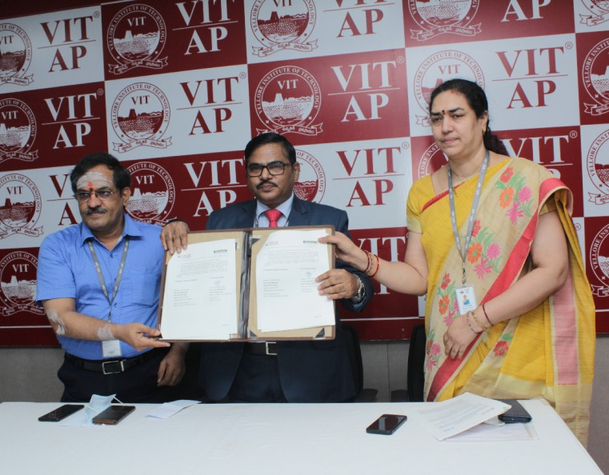
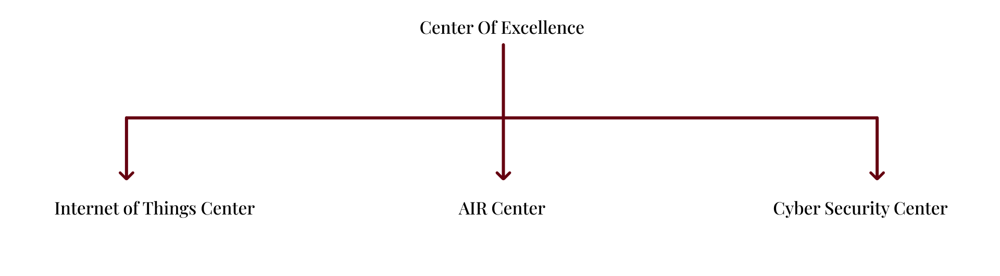

Center of Excellence
VIT-AP University established three Centers of Excellence in IoT, Cyber Security, and AI and Robotics. The aim of these center's is to make the greatest possible contributions to industry and society by focusing on research, consulting, projects, and training
faculty and students in cutting edge technology
The main goals of these center are
- To engage and establish new ground-breaking research in the fields of IoT, Cyber Security, AI and Robotics
- To maintain a strong and symbiotic relationship with the academic industry to ensure seamless project integration
- To engage instructors and students to learn about emerging technologies through progressive advanced technology-based curriculum and training
- Through entrepreneurial activity, nurture and channel support to longterm ideas.

MoU with Intel
On November 18, 2021, VIT-AP University, Andhra Pradesh signed a Memorandum of Understanding with Intel. Dr. S. V. Kota Reddy, Vice Chancellor of VIT-AP University, Mr. Jitendra Chaddah, Country Manager, Intel India's Supply Chain, have signed the
MOU. The goal of this MOU is to establish an Internet of Things(IOT) Center of Excellence at VIT-AP University. The COE was established to help students improve their technical abilities and bridge the gap between industry and academia.
The Internet of Things (IoT) is a cutting-edge technology that generates a global network of machines and devices that can connect and exchange data through the Internet. This center's gives academics, students, and researchers the opportunity
to conduct research and generate new ideas.

MoU with Boston IT Solutions (India) Pvt Ltd
On Thursday, November 18th, 2021, a virtual signing ceremony between VIT-AP University, Andhra Pradesh and Boston IT Solutions(India) Pvt. Ltd in Bengaluru, Karnataka took place.Dr. S. V. Kota Reddy, Vice Chancellor of VIT-AP University,Ms. Laxmi
Nageswari, Global Head of AI Education and Solutions, have signed the MOU. This MOU seeks to collaborate on the development of real-time applications, as well as cooperative research and consulting on cutting-edge AI and robotics technology.
It also gives students the opportunity to obtain experience working in an engineering workplace while still meeting their academic requirements.
